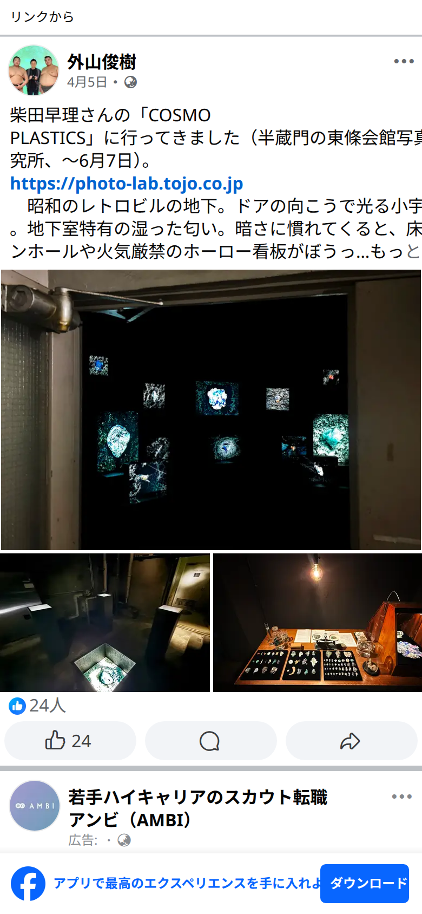

1
外山俊樹 · Facebook
2026-05-11
「昭和のレトロビルの地下。ドアの向こうで光る小宇宙群。地下室特有の湿った匂い。暗さに慣れてくると、床のマンホールや火気厳禁のホーロー看板がぼうっと見えてきます。元現像所だったビルがそのまま展示場になっているルミナルスペース」
「顕微鏡写真にも宇宙から見た惑星にも見えるスケール感の喪失とタイムスパンの凝縮。この空間で体験するのは、夢と現実の境界が曖昧な夢野久作の幻想文学の感覚に共通します」
